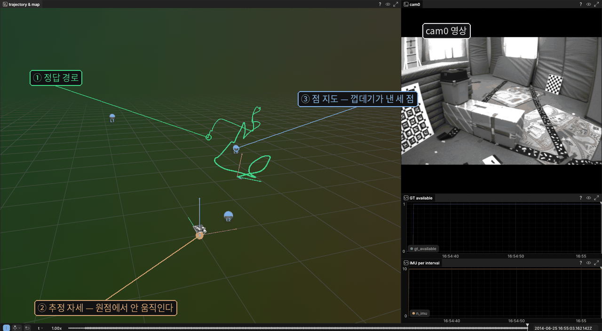

SLAM 프로젝트의 틀
📅 제출 마감 — 4회 수업 시작 전 · 정확한 날짜는 수업에서 공지합니다
1. 목표와 할 일
학기 내내 쓸 SLAM 프로젝트 mvins의 뼈대를 세웁니다. 데이터를 읽어 알고리즘에 넣고, 나온 자세와 지도를 파일로 남기고, 그 파일을 그림으로 보는 사슬을 한 번 끝까지 이어 보는 것이 전부입니다.
이번에는 알고리즘을 만들지 않습니다. 알고리즘 자리에는 빈 껍데기를 놓습니다 — 자세는 늘 원점, 지도는 늘 같은 점 세 개를 냅니다. 7회에 추적기가, 10회에 IMU 적분기가, 11회와 13회에 백엔드가 그 자리에 들어옵니다.
껍데기를 먼저 놓는 이유가 있습니다. 껍데기는 아무것도 추정하지 않으므로, 화면에서 움직이는 것은 전부 데이터 쪽입니다. 그래서 이 단계에서 데이터로더가 맞는지를 가장 확실하게 볼 수 있습니다. 알고리즘까지 같이 짜 놓으면 궤적이 이상할 때 누가 범인인지 가릴 수 없게 됩니다.
EuRoC 파일 ──▶ DataSource ──▶ SlamSystem ──▶ Writer ──▶ 파일 다섯 개
(png · csv) 데이터로더 (껍데기) │
▼
view_rerun.py (파이썬)
정답 경로 · 추정 경로 · 점 지도
C++ 쪽은 파일만 남기고, 그리는 일은 파이썬이 그 파일을 읽어서 합니다. 그러면 C++ 빌드에 시각화 의존성이 하나도 없고, 같은 파일이 나중에 평가 입력으로도 쓰입니다.
할 일은 일곱 가지입니다. 자세한 설명은 3절에 있습니다.
| # | 무엇을 만드나 | 한 줄 설명 |
|---|---|---|
| ① | config/conventions.md | 좌표계와 표기 규약 여섯 줄 |
| ② | AGENTS.md / CLAUDE.md | 에이전트가 매번 읽을 프로젝트 규칙 |
| ③ | 데이터로더 | DataSource 인터페이스와 EuRoC 구현. 값을 찍어 눈으로 확인한다 |
| ④ | 테스트 여섯 개 | ③에서 눈으로 본 것을 자동 판정으로 굳힌다 |
| ⑤ | 알고리즘 껍데기와 진입점 | 원점 자세와 점 세 개. 경로는 설정 파일에서 읽는다 |
| ⑥ | 시각화 | 정답 경로·추정 경로·점 지도를 한 화면에. C++ 실시간과 파이썬 두 길 |
| ⑦ | PR 작성과 머지 | 에이전트가 쓴 코드를 사람이 읽는 자리 |
③과 ⑥이 이 과제의 알맹이입니다. 나머지는 그 둘을 받쳐 주는 것들입니다.
2. 준비
리눅스에서 작업하는 것을 전제로 씁니다. 윈도우만 있으면 WSL을 쓰면 됩니다 — 아래를 펼쳐 보세요.
윈도우만 있는 경우 — WSL로 하는 법
WSL2는 윈도우 안에서 도는 진짜 리눅스입니다. 이 과제에 필요한 것이 다 됩니다. GUI 창도 뜹니다 — 아래 세 번째 항목입니다.
① 설치 — PowerShell을 관리자로 열고 한 줄이면 됩니다.
wsl --install # WSL2 + Ubuntu 가 함께 깔린다. 끝나면 재부팅 wsl --install -d Ubuntu-24.04 # 배포판을 고르고 싶으면
Windows 11이면 그대로 되고, Windows 10도 최신 업데이트가 돼 있으면 됩니다. 재부팅 뒤 시작 메뉴에서 Ubuntu를 열면 리눅스 셸이 뜹니다. 그다음은 리눅스와 완전히 같습니다.
② 코드와 데이터를 어디에 둘 것인가 — 이게 제일 중요합니다.
~/mvins ← 여기에 둔다 (WSL 파일시스템 안) /mnt/c/Users/… ← 여기에 두지 않는다 (윈도우 드라이브)
윈도우 드라이브(/mnt/c/...)는 WSL에서 보면 네트워크 드라이브처럼 동작합니다. 파일이 수천 개인 빌드나 영상 600장을 읽는 작업이 몇 배 느려집니다. 데이터셋 압축도 WSL 쪽 홈에 풀어 두세요. 윈도우 탐색기에서 그 폴더를 보고 싶으면 주소창에 \\wsl$를 치면 됩니다.
③ 시각화 창이 뜨는가 — 뜹니다. 세 가지 길이 있습니다.
| 방법 | 어떻게 |
|---|---|
| 그냥 띄운다 | WSLg가 기본으로 들어 있어서 리눅스 GUI 창이 윈도우 창으로 그대로 뜹니다. 뷰어를 실행하면 됩니다. 대부분 이걸로 끝납니다 |
| 브라우저로 본다 | WSLg가 말썽이면 rerun --web-viewer로 띄우고 윈도우 브라우저에서 localhost 주소를 엽니다. WSL2는 localhost를 윈도우 쪽으로 자동으로 이어 줍니다. GUI 스택을 전혀 안 탑니다 |
| 파일로 넘긴다 | WSL에서 .rrd로 저장하고, 윈도우에 설치한 뷰어로 엽니다. 제출용 로그를 남길 때도 이 방법을 씁니다 |
막히면 혼자 붙잡고 있지 마세요. 이 과제에서 배우려는 것은 WSL 설정이 아닙니다. 한 시간 넘게 막히면 연락 주세요.
데이터셋 내려받기
EuRoC MAV 데이터셋의 V1_01_easy를 씁니다. 한 번 받으면 학기 내내 이것만 씁니다. 영상 2 912장(145.6초), IMU 29 111줄, 정답 28 712줄, 그리고 방 전체를 레이저로 뜬 3차원 점군입니다. 압축을 푸는 데 1.2 GB쯤 필요합니다.
📦 V1_01_easy_mono.zip 내려받기 — 약 600 MB
압축을 풀면 이런 모양입니다. 폴더 이름이 mav0인 자리를 로더에 넘깁니다.
mav0/cam0/data/*.png 영상 2912장 (752×480 8비트 회색조, 20 Hz) mav0/cam0/data.csv 시각과 파일 이름 mav0/cam0/sensor.yaml 내부 파라미터 · 왜곡 계수 · T_BS mav0/imu0/data.csv 200 Hz. 열 순서는 시각, 각속도 셋, 가속도 셋 mav0/imu0/sensor.yaml 잡음 밀도 · T_BS (단위행렬이다) mav0/state_groundtruth_estimate0/data.csv 정답. 자세뿐 아니라 속도와 바이어스까지 mav0/pointcloud0/data.ply 방을 레이저로 뜬 3차원 점군. 4회에 씁니다 mav0/body.yaml
| 언제 | 무엇을 쓰나 |
|---|---|
| 이번 과제 ~ 4회 | 영상 · IMU · 정답 |
| 4회 | + 점군 — 정답 자세로 점군을 영상에 투영해 겹치는지 봅니다 |
| 5회 ~ 학기 끝 | 같은 데이터. 다시 받을 일이 없습니다 |
만드는 동안에는 앞부분만 쓰세요
2 912장을 매번 다 읽으면 고치고 다시 돌리는 데 시간이 걸립니다. 설정 파일의 max_frames를 600쯤(30초)으로 줄여 두고 만드세요. 다 되면 -1로 돌려 전 구간을 한 번 돌립니다. 데이터를 따로 받을 필요는 없습니다 — 설정 한 줄입니다.
원본에는 cam1(스테레오)과 vicon0(원시 측정)도 있지만 이 과목은 단안 영상과 IMU만 쓰므로 빼 두었습니다. 위에 적힌 것이 전부입니다.
출처: M. Burri 외, The EuRoC micro aerial vehicle datasets, IJRR 2016. 라이선스는 비상업적 사용 허용(In Copyright – Non-Commercial Use Permitted)입니다.
GitHub 저장소 만들기
mvins라는 이름으로 저장소를 하나 만들고 학기 내내 여기에 쌓습니다. 과제마다 새로 만들지 않습니다. HW1의 로더를 HW3에서 그대로 쓰게 되기 때문입니다.
비공개로 두고 교수 계정을 협업자로 추가하셔도 되고, 공개로 두셔도 됩니다. 데이터셋은 저장소에 넣지 않습니다. .gitignore에 데이터 폴더와 build/, 출력 폴더를 넣어 두세요.
라이브러리 설치
필요한 것은 다섯 가지입니다. 이 데이터는 rosbag이 아니라 png와 csv이므로 ROS2는 쓰지 않습니다. 설치하고 환경을 맞추는 데 시간을 쓰지 마세요.
| 무엇 | 왜 필요한가 |
|---|---|
| CMake · g++ | C++17로 빌드합니다 |
| Eigen 3 | 선형대수 전부 |
| OpenCV 4 | 영상 읽기. 이번에는 imread 하나면 됩니다 |
| yaml-cpp | sensor.yaml을 읽습니다 |
| Sophus | SO3·SE3. 헤더만 있는 라이브러리라 받아서 설치하면 끝납니다 |
| Rerun C++ SDK | 시각화(③절 ⑥). 따로 설치하지 않습니다 — CMakeLists.txt에서 받아 쓰게 적어 두면 됩니다 |
Sophus 말고는 전부 배포판 패키지로 들어옵니다. 설치는 에이전트에게 맡기세요. 아래 정도로 부탁하면 됩니다.
ROS 는 설치하지 말아 줘. 이 프로젝트는 rosbag 을 쓰지 않는다.
설치가 끝나면 각각의 버전을 찍어서 확인시켜 주고, 그 과정을 setup.sh 한 파일로 남겨 줘.
파이썬 쪽도 시각화에 씁니다 — rerun-sdk, numpy, opencv-python 셋입니다. C++ SDK와 파이썬 SDK는 같은 뷰어를 씁니다. 판만 맞춰 두세요.
3. 세부 과제
만들 파일
이 구조를 그대로 쓰세요. 학기 내내 유지합니다. 굵게 표시한 것이 이번에 여러분이 만드는 파일입니다.
mvins/ ├── CMakeLists.txt 빌드. ROS 없음 · C++17 ├── AGENTS.md · CLAUDE.md 에이전트가 매번 읽을 규칙 ② ├── config/ │ ├── conventions.md 좌표계와 표기 규약 ① │ └── mvins.yaml 경로와 실행 옵션 ⑤ ├── include/mvins/ │ ├── core/types.hpp Timestamp · ImuSample · ImageFrame · NavState │ ├── core/config.hpp mvins.yaml 을 읽는다 ⑤ │ ├── io/data_source.hpp ← 인터페이스. 아래에 그대로 준다 ③ │ ├── io/euroc_source.hpp EuRoC 구현 ③ │ ├── io/writer.hpp 파일 다섯 개를 남긴다 ⑤ │ ├── slam/slam_system.hpp ← 알고리즘이 앉을 자리 ⑤ │ └── viz/viewer.hpp C++ 실시간 시각화 ⑥ ├── src/… 위 헤더의 구현 ├── apps/main.cpp 진입점 ③⑤ ├── tests/run_tests.cpp 테스트 여섯 개 ④ └── scripts/view_rerun.py 파이썬 시각화 ⑥
오른쪽 번호가 아래 세부 과제 번호입니다. main.cpp가 ③과 ⑤ 두 군데에 걸쳐 있는데, ③에서는 로더가 읽은 값을 찍어 보는 용도로 먼저 쓰고 ⑤에서 파이프라인으로 키웁니다.
main.cpp가 받는 인자
경로를 코드에 박지 마세요. 기본값은 전부 config/mvins.yaml에서 읽고, 인자를 주면 그쪽이 이기게 합니다. 돌려 볼 때 한두 개만 바꾸는 일이 자주 생깁니다.
| 인자 | 무엇 |
|---|---|
| --config <파일> | 설정 파일. 기본값 config/mvins.yaml |
| --data <폴더> | 데이터셋 폴더. mav0/가 이 아래에 있어야 합니다 |
| --out <폴더> | 결과 파일이 쌓일 폴더 |
| --probe | 로더가 읽은 값만 찍고 끝냅니다. ③에서 씁니다 |
| --stride N | N 프레임마다 하나만. 1이면 전부 |
| --max-frames N | 앞에서 N장만. 빨리 돌려 볼 때 |
| --no-viz | C++ 실시간 시각화를 끕니다. 파일은 그대로 남습니다 |
--probe를 빼면 데이터를 끝까지 읽어 파일을 남기고 그림을 그립니다. 이것이 이 프로그램이 하는 일의 전부입니다.
① config/conventions.md 작성
좌표계와 표기를 정해 문서로 못박습니다. 2회 자료 ⑦절에 그대로 옮겨 쓸 수 있는 초안이 있습니다. 이 파일은 앞으로 에이전트에게 코드를 시킬 때마다 함께 붙입니다. 대화가 바뀌면 에이전트는 규약을 잊기 때문입니다.
여섯 줄이 들어가야 합니다.
| 정하는 것 | 안 정하면 나중에 |
|---|---|
| 아래첨자 순서 — T_WB가 무슨 뜻인지 | 파일마다 반대로 곱해서 궤적이 역방향으로 나옵니다 |
| 몸체 프레임이 무엇인지 | IMU 값을 어디에 붙일지가 안 정해집니다 |
| 카메라 축 방향 | 4회 투영이 통째로 어긋납니다 |
| 중력 방향과 크기 | 10회에서 궤적이 위아래로 휩니다 |
| 쿼터니언 관례와 파일 입출력 순서 | 회전이 반대로 합성됩니다 |
| 시각을 다루는 방식과 imuBetween의 구간 | 구간마다 다른 오차가 조용히 들어갑니다 |
끝에 「아직 정하지 않은 것」 절을 하나 두세요. perturbation 방향(3회)과 상태 벡터 구성(10~11회)은 지금 정할 수 없습니다. 정하지 않았다고 적어 두면 나중에 그 자리를 찾을 수 있습니다. 적어 두지 않으면 누군가가 조용히 정해 버리고, 어디서 정해졌는지 아무도 모르게 됩니다.
② AGENTS.md / CLAUDE.md 작성
에이전트가 세션마다 자동으로 읽는 프로젝트 규칙 파일입니다. 쓰는 도구에 따라 이름이 다릅니다 — 한 파일을 쓰고 다른 이름은 심볼릭 링크로 걸어 두면 됩니다.
conventions.md가 「이 프로젝트의 수학과 표기」라면 이 파일은 「이 저장소에서 일하는 방법」입니다. 둘을 섞지 마세요.
들어가면 좋은 것은 이런 것들입니다. 여러분의 저장소에 맞게 직접 쓰세요.
- 이 프로젝트가 무엇인지 두세 줄
- 빌드하는 명령과 테스트를 돌리는 명령 — 그대로 복사해 붙일 수 있는 형태로
- 폴더 구조와, 새 파일을 어디에 두어야 하는지
- config/conventions.md를 가리키며 「코드를 쓰기 전에 반드시 읽어라」
- 하지 말아야 할 것 — 인터페이스 시그니처를 바꾸지 말 것, 데이터 파일을 커밋하지 말 것 같은 것
- 규약에 없어서 임의로 정한 것이 생기면 어디에 적어 둘지
길게 쓰지 마세요. 한 화면에 들어오는 분량이면 충분하고, 길면 오히려 에이전트가 중간을 흘립니다. 이번 과제를 하면서 「이 말을 매번 반복하고 있네」 싶은 것이 생기면 그때 그 줄을 추가하세요. 그렇게 자라는 파일입니다.
③ 데이터로더 구현
아래가 학기 내내 바뀌지 않는 인터페이스입니다. 시그니처를 바꾸지 마세요. 고정돼 있어야 10회의 합성 데이터 생성기를 같은 자리에 끼울 수 있고, 무엇보다 테스트를 붙일 자리가 생깁니다.
using Timestamp = int64_t; // 나노초
struct ImuSample { Timestamp t; Eigen::Vector3d w, a; };
struct ImageFrame { Timestamp t; cv::Mat gray; };
struct NavState {
Timestamp t;
Sophus::SE3d T_WB;
Eigen::Vector3d v_W, b_g, b_a;
};
class DataSource {
public:
virtual ~DataSource() = default;
virtual bool nextImage(ImageFrame&) = 0;
virtual bool imuBetween(Timestamp t0, Timestamp t1,
std::vector<ImuSample>&) = 0;
// 정답이 없는 시각에서는 nullopt 를 돌려준다
virtual std::optional<NavState> groundTruth(Timestamp t) const = 0;
virtual CameraModel camera() const = 0;
virtual ImuNoise imuNoise() const = 0;
virtual Sophus::SE3d T_BC() const = 0;
};
네 군데를 눈여겨보세요.
groundTruth()가 optional인 것. 정답 궤적은 첫 영상보다 1.040초 늦게 시작합니다. 그 앞 구간에서는 nullopt을 돌려줍니다. 0으로 채우면 「없다」와 「원점에 있다」가 구별되지 않습니다.
groundTruth()가 인터페이스에 있는 것. 평가 스크립트에서만 정답을 쓰면 「어느 모듈이 범인인가」를 못 가립니다. 정답을 실행 중에 꺼내 쓸 수 있어야 4회부터 쓸 검증 방법이 성립합니다. 이번 과제의 시각화도 이 함수로 정답 경로를 가져옵니다.
시각이 int64_t인 것. 1403715273262142976은 19자리라 double이 정확히 담지 못합니다. 초 단위 실수로 바꾸면 구간마다 다른 오차가 생기는데, 그게 잡음처럼 보여서 한참 못 찾습니다.
imuBetween의 구간. 어느 쪽 끝을 포함할지 여러분이 정하고 규약에 적습니다. 반열린 구간 (t0, t1]로 잡으면 이웃한 두 구간이 같은 샘플을 두 번 쓰지 않고, 이 데이터에서 정확히 10개가 나옵니다. 양 끝을 다 포함하면 11개입니다. 둘 다 틀린 것은 아니지만, 정하지 않은 채로 두면 나중에 사고가 됩니다.
이번에는 로더만 만듭니다. 알고리즘도 파일 출력도 그림도 아직 없습니다. 대신 main.cpp에서 읽은 값을 그대로 찍어 눈으로 확인합니다. 자동 테스트는 다음 과제(④)에서 만드는데, 여기서 눈으로 본 숫자가 그대로 그 테스트의 기준이 됩니다.
[인터페이스] 아래 헤더의 시그니처를 바꾸지 말고 EuRoC ASL 형식을 읽는 EurocSource를 구현해 줘. (여기에 data_source.hpp 를 붙여 넣는다)
[단위] 시각은 int64_t 나노초로만 다뤄 줘. double 초로 바꾸지 말아 줘. imuBetween의 구간은 (t0, t1]로 해 줘.
[확인] main.cpp에 --probe 모드를 만들어 줘. 읽은 값을 사람이 읽을 수 있게 찍고 끝내는 모드다. 이것들을 찍어 줘 — 영상·IMU·정답의 줄 수, 첫 영상과 첫 IMU 의 시각, 정답이 늦게 시작하는 폭, 앞 다섯 구간의 영상 사이 IMU 개수, 첫 IMU 샘플의 각속도·가속도와 그 크기, 카메라 내부 파라미터와 왜곡, T_BC 행렬과 그 축-각·이동 크기, 그리고 첫 영상 시각에서 groundTruth()가 무엇을 돌려주는지. 판정하지 말고 값만 찍어 줘. 판정은 내가 눈으로 한다.
[함정] imu0/data.csv는 각속도가 가속도보다 앞이다. sensor.yaml의 T_BS는 행 우선 16개 숫자인데 Eigen 기본은 열 우선이라 그대로 Map 하면 전치된다. 읽은 회전행렬을 직교화(SVD)하지 말아 줘 — 다음 과제의 테스트가 무의미해진다.
[남긴다] 규약에 없어서 네가 임의로 정한 것이 있으면 코드 맨 위에 목록으로 적어 줘.
받은 코드에서 확인할 것
□ 시각을 double 로 바꾼 곳이 정말 하나도 없는가 ← grep 한 번이면 된다 □ --probe 를 실제로 돌려 봤는가, 찍힌 값을 읽어 봤는가 □ groundTruth() 가 없는 구간에서 정말 nullopt 인가 □ T_BS 를 다듬지(SVD) 않고 읽은 값 그대로 담는가 □ 임의로 정한 것 목록에 내가 동의하지 않는 항목이 있는가
돌려 보면 이런 것이 나옵니다
이 숫자들을 눈으로 확인하세요. 여기서 이상한 것이 보이면 그것이 바로 버그입니다.
$ ./build/main --probe 영상 2912 장 IMU 29120 개 정답 28712 줄 첫 영상 시각 1403715273262142976 ns 첫 IMU 시각 1403715273262142976 ns ← 같은가? 정답 시작 지연 1.040000 s ← 정답이 늦게 시작한다 영상 사이 IMU 10 10 10 10 10 ... ← 전부 같은 값인가? 첫 IMU 샘플 각속도 w -0.002094 0.017453 0.077493 가속도 a 9.087496 0.130755 -3.693838 |a| 9.810408 m/s^2 ← 중력이 보이는가? T_BC (몸체에서 본 카메라) 0.014866 -0.999881 0.004140 -0.021640 0.999557 0.014967 0.025716 -0.064677 -0.025774 0.003756 0.999661 0.009811 0.000000 0.000000 0.000000 1.000000 축-각 89.155043 deg 축 [-0.010981 0.014959 0.999828] ||t|| 0.068903 m 첫 영상 시각의 정답: 없다 (nullopt)
④ 테스트 여섯 개 구현
③에서 눈으로 본 것을 자동으로 판정하게 굳힙니다. 기준을 넘으면 실패로 출력하게 만드세요. 「오차가 작습니다」라고 찍는 것은 테스트가 아닙니다. 기준과 결과를 둘 다 숫자로 찍고, 하나라도 실패하면 종료 코드가 0이 아니게 합니다.
⚠️ 6번은 나중에 채웁니다
1~5번은 로더만 있으면 됩니다. 지금 쓰세요. 6번은 껍데기(⑤)와 파일 출력이 있어야 돌아가므로, ⑤를 만든 뒤에 돌아와서 채웁니다. 자리만 먼저 잡아 두세요.
| # | 무엇을 보나 | 통과 기준 |
|---|---|---|
| 1 | 영상 한 장 사이의 IMU 샘플 수 | 전 구간에서 정확히 10개 |
| 2 | 정답이 없는 앞 구간의 groundTruth() | nullopt. 정답이 늦게 시작하는 폭 1.040 ± 0.002초 |
| 3 | 첫 IMU 샘플의 가속도 크기 | 9.8104 ± 0.001 m/s² |
| 4 | 파일에서 읽은 R_BC의 항등식 | RᵀR = I, det R = 1 — 오차 < 1e-12 |
| 5 | T_BC를 축-각으로 바꿨을 때 | 각 89.155° ± 0.05° · 축의 z 성분 +0.9998 ± 0.0005 · ‖t_BC‖ 0.0689 ± 0.0005 m |
| 6 | 틀이 이어졌나 ⑤ 뒤에 채운다 | 알고리즘이 받은 영상 = 프레임 수 · IMU = (프레임 수 − 1) × 10 · frames.jsonl 줄 수 = 프레임 수 · traj_gt.txt 줄 수 = 정답이 있는 프레임 수 · 껍데기 자세가 원점에서 < 1e-15 |
1~3은 「데이터를 제대로 읽었나」, 4~5는 「변환이 제정신인가」, 6은 「사슬이 이어졌나」입니다. 셋 다 필요합니다. 항등식만 통과하면 엉뚱한 파일을 읽고도 통과할 수 있고, 1~3만 통과하면 변환이 틀린 채로 넘어갑니다.
5번에서 각만 보면 안 됩니다. T_BS를 열 우선으로 잘못 읽으면 전치된 행렬이 들어오는데, 전치된 회전행렬도 여전히 회전행렬이라 4번을 그대로 통과합니다. 그리고 각도 89.155° 그대로입니다 — 뒤집히는 것은 축의 부호뿐입니다. 축의 z 성분을 부호까지 보거나, ‖t_BC‖를 보면 잡힙니다. 4×4를 통째로 전치하면 이동 성분이 아래 행으로 옮겨 가서 ‖t_BC‖가 0이 됩니다.
[형식] 각 줄마다 기준과 결과를 둘 다 숫자로 찍어 줘. 기준을 넘으면 「실패」로 출력하고, 하나라도 실패하면 종료 코드가 0이 아니게 해 줘. 실패했을 때 어떤 값이 나왔는지 함께 찍어 줘 — 안 찍히면 원인을 못 좁힌다.
[범위] 1~5번만 지금 써 줘. 6번은 아직 만들지 않은 것이 있어서 못 쓴다. 자리만 비워 두고 「⑤ 뒤에 채운다」고 주석으로 적어 줘.
[주의] 기준값을 지금 나오는 값에서 가져오지 말아 줘. 위 표에 적힌 값을 그대로 써 줘 — 코드가 틀려도 통과하는 테스트가 되면 안 된다. T_BC는 다듬지 않은, 파일에서 읽은 값으로 검사해 줘.
[남긴다] 각 테스트가 무엇을 잡으려는 것인지 한 줄씩 주석으로 적어 줘.
받은 코드에서 확인할 것
□ 기준값이 위 표와 같은가, 지금 나온 값을 그대로 박았는가 ← 여기가 제일 중요하다 □ 일부러 틀리게 고쳐 보면 실제로 실패하는가 ← 안 해 보면 모른다 □ 실패했을 때 어떤 값이 나왔는지 찍히는가 □ 하나라도 실패하면 종료 코드가 0 이 아닌가 □ T_BC 를 다듬지(SVD) 않은 값으로 검사하는가
6번의 마지막 줄도 눈여겨보세요. 아무것도 안 하는 껍데기를 테스트하는 게 이상해 보이지만, 이것이 잡는 것은 writeFrame에 추정 자세 대신 정답을 넘기는 실수입니다. 그렇게 하면 그림이 아주 그럴듯해집니다 — 추정 경로가 정답과 완벽히 겹칩니다. 눈으로만 보면 오히려 통과한 것처럼 보입니다.
⑤ 알고리즘 껍데기와 진입점 구현
알고리즘이 앉을 자리를 인터페이스로 뚫어 놓고, 이번에는 빈 구현을 넣습니다.
class SlamSystem {
public:
virtual ~SlamSystem() = default;
virtual void addImu(const std::vector<ImuSample>& imu) = 0;
virtual void addImage(const ImageFrame& frame) = 0;
virtual NavState state() const = 0;
virtual std::vector<Eigen::Vector3d> landmarks() const = 0;
};
껍데기는 state()에서 원점 자세를 그대로 돌려주고, landmarks()에서 늘 같은 점 세 개를 돌려줍니다. 점의 좌표는 아무거나 좋습니다 — 방(약 4.4 × 5.8 × 1 m) 안에 들어오게만 잡으세요.
addImu와 addImage는 받은 개수를 세기만 합니다. 아무것도 안 하는 함수에 카운터를 두는 게 이상해 보일 수 있는데, 그 개수가 테스트 6의 기준이 됩니다. 「파일을 읽었다」와 「읽은 것이 알고리즘까지 갔다」는 다른 이야기이고, 세어 보지 않으면 구별되지 않습니다.
진입점(main)은 이 셋을 잇기만 합니다. 짧아야 합니다 — 여기가 길어지면 알고리즘이 새어 들어온 것이고, 그러면 나중에 모듈만 갈아 끼우는 것이 안 됩니다.
데이터 경로를 코드에 박지 마세요. config/mvins.yaml 같은 설정 파일에서 읽습니다. 경로가 사람마다 다르고, 뒤 회차에서 합성 데이터로 바꿔 끼울 때도 이 파일만 고치게 됩니다.
dataset: path: ~/data/euroc/V1_01_easy # mav0/ 가 이 아래에 있어야 한다 output: dir: out # 아래 파일들이 쌓이는 폴더 trajectory: traj_estimate.txt # 추정 궤적 (TUM 형식) trajectory_gt: traj_gt.txt # 정답 궤적 (같은 형식) map: map.ply # 점 지도 (ASCII PLY) frames: frames.jsonl # 한 줄에 한 프레임 metrics: metrics.json # 한 덩이 요약 meta: meta.json # 카메라 파라미터와 T_BC run: stride: 2 # N 프레임마다 하나만. 1 이면 전부 max_frames: -1 # -1 이면 끝까지. 만드는 동안에는 600 쯤으로 줄인다 viz: enable: true # C++ 에서 실시간으로 그린다 (⑥절)
파일 이름까지 설정에서 읽게 해 두세요. 뒤 회차에서 백엔드를 두 벌 만들어 결과를 비교할 때 traj_eskf.txt·traj_window.txt처럼 이름만 바꿔 두 번 돌리게 됩니다. 그때 코드를 고치지 않으려는 것입니다.
명령줄 인자를 주면 그쪽이 이기게 해 두면 편합니다 — --stride 4 하나만 바꿔 돌려 보는 일이 자주 생깁니다.
while (source.nextImage(frame)) {
source.imuBetween(t_prev, frame.t, imu); // 직전 영상 이후의 IMU 구간
slam->addImu(imu);
slam->addImage(frame);
const NavState est = slam->state();
const auto gt = source.groundTruth(frame.t);
writer.writeFrame(frame.t, frame.path, est.T_WB, gt ? &(*gt) : nullptr, ...);
t_prev = frame.t;
}
C++가 남기는 파일은 다섯 개입니다. 형식을 지금 정해 둡니다.
| 파일 | 형식과 이유 |
|---|---|
| traj_estimate.txt | TUM 형식 t tx ty tz qx qy qz qw. evo가 바로 먹어서 평가 코드를 짤 필요가 없습니다 |
| traj_gt.txt | 같은 형식. 정답이 없는 프레임은 줄이 없습니다 |
| map.ply | ASCII PLY. 4회에서 Leica 점군과 같은 뷰어에 겹쳐 봅니다 |
| frames.jsonl | 한 줄에 한 프레임. 시계열 그림이 전부 이 파일에서 나옵니다 |
| metrics.json | 한 덩이. 지금은 ATE 자리가 비어 있습니다 |
{"t_ns":1403715278062142976, "img":"…/cam0/data/1403715278062142976.png",
"p":[0.0,0.0,0.0], "q":[0.0,0.0,0.0,1.0],
"gt_p":[0.879728,2.139790,0.949347], "gt_q":[-0.827702,-0.058441,-0.554689,0.061755],
"n_imu":10, "n_landmarks":3}
픽셀이 아니라 영상 경로를 적는 것에 주의하세요. 영상은 이미 디스크에 있으니 경로만 넘기고 파이썬이 직접 읽습니다. 그래야 한 줄이 수백 바이트라서 나중에 파이프로 흘릴 수도 있습니다. 정답이 없으면 "gt_p":null입니다. 0으로 채우지 않습니다.
⑥ 시각화 구현
정답 경로 · 추정 경로 · 점 지도를 한 화면에 올립니다. 영상과 시계열도 같은 시간축에 걸어 앞뒤로 돌려 볼 수 있게 합니다. 도구는 Rerun입니다.

그리는 길을 두 개 만듭니다. 쓰임이 다릅니다.
| 어디서 | 무엇을 읽나 | 언제 쓰나 |
|---|---|---|
| C++ (실시간) Rerun C++ SDK |
메모리에 있는 것을 돌면서 바로 밀어 넣습니다 | 만드는 중에. 고치고 다시 돌리면 바로 보입니다 |
| 파이썬 (파일) scripts/view_rerun.py |
⑤에서 남긴 frames.jsonl·map.ply | 끝난 뒤에. 채점·회귀·남의 결과를 열어 볼 때 |
둘은 서로 모른 채로 돕니다. 그런데 엔티티 경로와 색을 똑같이 맞춰 두세요. 그러면 두 그림이 같아야 정상이고, 다르면 그 자체가 신호입니다 — 대개 파일로 나갈 때 뭔가를 빠뜨린 것입니다.
핵심은 좌표계를 계층으로 등록하는 것입니다. 두 길 모두 같습니다. 2회에서 정한 사슬 T_WB · T_BC가 그대로 경로 이름이 됩니다.
world/body 몸체 자세 — 매 프레임 갱신한다 world/body/cam T_BC — 한 번만. 몸체를 따라 움직인다 world/body/cam/image 카메라 내부 파라미터와 영상 world/traj_gt 정답 경로 (초록) world/traj_est 추정 경로 (주황) world/map 점 지도 (파랑)
world/body만 갱신하면 카메라와 영상이 따라 움직입니다. 변환을 손으로 곱해 넣을 필요가 없습니다. 그리고 경로를 잘못 쓰면 그림이 어긋나므로, 그림이 어긋나는 것이 곧 좌표계가 틀렸다는 신호가 됩니다. 영상이 몸체를 안 따라가면 경로를 world/image로 썼을 가능성이 큽니다.
C++ 쪽
Rerun은 C++ SDK가 있습니다. CMakeLists.txt에서 받아 쓰면 되고 따로 설치할 것이 없습니다. 실행하면 뷰어 창이 뜨고, 프레임마다 바로 그려집니다.
[할 일] Rerun C++ SDK를 CMakeLists.txt에 FetchContent로 붙이고, 아래 인터페이스로 시각화 클래스를 만들어 줘. 끄고도 빌드되게 옵션으로 해 줘 — 껐을 때는 아무것도 안 하는 구현이 돌아오면 된다. (여기에 Viewer 헤더를 붙여 넣는다)
[그릴 것] 정답 경로, 추정 경로, 점 지도, cam0 영상, 그리고 정답이 있는지와 구간당 IMU 개수 스칼라 둘. 정답과 추정은 다른 색으로. 좌표계는 계층으로 등록해 줘 — world/body/cam/image 아래로. 월드 좌표로 직접 변환해 넣지 말아 줘. 시간축은 타임스탬프(ns)로 잡아 줘.
[검증] 로그를 .rrd 파일로 저장하는 길도 만들어 줘. 저장한 파일을 다시 열었을 때 화면에서 본 것과 같아야 한다.
[함정] 판마다 함수 이름이 바뀐다. 설치된 버전을 먼저 확인하고 그 버전의 API로 써 줘. 선을 그릴 때 점 벡터를 중괄호로 그냥 감싸면 「점 N개짜리 선 하나」가 아니라 「점 1개짜리 선 N개」로 해석돼 화면에 아무것도 안 나온다 — 그런데 엔티티는 트리에 보여서 로그가 안 된 줄 알기도 어렵다. 쿼터니언 순서도 곳마다 다르다.
[남긴다] 규약에 없어서 네가 임의로 정한 것을 코드 위에 목록으로 적어 줘.
파이썬 쪽
⑤에서 남긴 파일만 읽습니다. C++를 다시 돌리지 않고도 그림을 볼 수 있어야 합니다 — 채점할 때, 그리고 「어제 돌린 결과가 뭐였지」를 볼 때 쓰는 길입니다. stdin으로 한 줄씩 받는 모드도 같은 본문으로 처리해 두면 C++ SDK 없이도 실시간으로 볼 수 있습니다.
두 길 모두, 받은 코드에서 확인할 것
□ 좌표계가 계층으로 등록됐는가, 매번 월드 좌표로 변환해 넣었는가 □ z 축이 위로 나오는가 ← 뒤집혀 보이면 규약이 어긋난 것이다 □ 쿼터니언 순서가 (x,y,z,w) 인가 (w,x,y,z) 인가 ← 궤적이 이상하게 돌면 여기부터 본다 □ 정답이 없는 앞 구간을 그리지 않고 건너뛰는가, 0 을 찍는가 □ C++ 그림과 파이썬 그림이 같은가 ← 다르면 파일로 나갈 때 뭔가 빠진 것이다
그림이 이상할 때
「고쳐 줘」라고 하지 마세요. 에이전트는 증상이 사라질 때까지 코드를 바꿉니다. 증상은 없어지고 원인은 남는데, SLAM에서는 그 상태가 오래 안 들킵니다. 대신 증상을 숫자로 말하고 원인 후보를 대게 하세요 — 「300 프레임을 처리했다는데 뷰어에는 점 세 개만 뜨고 경로가 안 보인다. 원인 후보를 세 개 대고, 각각을 확인할 최소 실험을 하나씩 제안해라. 코드는 아직 고치지 마라.」
⑦ PR 작성과 머지
main에 직접 커밋하지 말고 브랜치를 파서 작업한 뒤 PR로 올리고 머지하세요. 혼자 쓰는 저장소에 PR이 형식적으로 보일 수 있는데, 목적이 다릅니다. PR의 diff 화면이 에이전트가 쓴 코드를 사람이 읽는 자리입니다. 에디터에서는 넘어가던 줄이 diff에서는 눈에 걸립니다.
이렇게 하면 됩니다.
- 작업 단위마다 브랜치를 팝니다 — feat/dataloader, feat/viewer 정도로
- PR 본문에 무엇을 왜 바꿨는지와 테스트 결과를 적습니다
- 머지하기 전에 diff를 끝까지 읽습니다. 이것이 이 항목의 목적입니다
- 읽다가 이해 안 되는 줄이 있으면 그 줄을 지목해 설명시키세요. 그대로 머지하지 마세요
PR을 최소 두 개는 만드세요. 하나에 다 몰아넣으면 diff가 커져서 읽지 않게 됩니다. 커밋 메시지와 PR 본문도 에이전트에게 맡겨도 되지만, 맞는 말인지는 확인하세요 — 하지 않은 일을 했다고 쓰는 경우가 있습니다.
4. 제출 양식
아래 양식을 채워 PDF 한 개로 냅니다. 파일 이름은 HW1_학번.pdf입니다. 「복사」를 누르면 양식이 통째로 복사됩니다.
# HW1 — SLAM 프로젝트의 틀
학번:
이름:
저장소 주소:
## 1. AGENTS.md / CLAUDE.md
(파일 내용을 그대로 붙입니다. 그리고 한두 줄로 —
이번 과제를 하면서 어떤 줄을 나중에 추가하게 됐는지, 왜 추가했는지.)
```
```
## 2. conventions.md
(파일 내용을 그대로 붙입니다.)
```
```
- imuBetween 의 구간을 어느 쪽으로 정했나요? (t0, t1] / [t0, t1] / 그 밖
- "아직 정하지 않은 것" 절에 무엇을 적었나요?
## 2-1. 설정 파일
(config 파일 내용을 그대로 붙입니다. 데이터 경로가 코드에 박혀 있지 않은지 봅니다.)
```
```
## 3. 주요 함수 설명
(아래 넷을 각각 서너 줄로. 코드를 붙이지 말고 말로 씁니다.
무엇을 받아 무엇을 돌려주는지, 그리고 그렇게 만든 이유를.)
- EurocSource 의 생성자 — 무엇을 읽어 두나요?
- imuBetween(t0, t1) — 경계를 어떻게 처리했나요?
- groundTruth(t) — 정답이 없는 시각에서 무엇을 하나요?
- 시각화에서 world/body/cam/image 경로는 무슨 뜻인가요?
- C++ 시각화와 파이썬 시각화는 각각 무엇을 입력으로 받나요?
## 4. 시각화 결과
(C++ 실시간 화면과 파이썬 화면을 각각 캡처해 붙이고, 아래를 설명합니다.)
- 무엇이 무슨 색으로 그려져 있나요?
- 추정 자세가 원점에서 안 움직이는데, 왜 그것이 정상인가요?
- 정답 경로가 앞 1.040초 동안 없는 것이 그림에서 어떻게 보이나요?
- 두 그림이 같나요? 다르다면 무엇이 달랐고 왜 그랬나요?
## 5. 테스트 통과 여부
| # | 무엇을 보나 | 기준 | 결과 | 통과 |
|---|---|---|---|---|
| 1 | 영상 사이 IMU 개수 | 정확히 10 | | |
| 2 | 앞 구간 groundTruth() | nullopt · 1.040 ± 0.002 s | | |
| 3 | 첫 가속도 크기 | 9.8104 ± 0.001 m/s² | | |
| 4 | R_BC 항등식 | < 1e-12 | | |
| 5 | T_BC 축-각 (각 / 축 z / ‖t‖) | 89.155° / +0.9998 / 0.0689 m | | |
| 6 | 틀이 이어졌나 | 위 표 참고 | | |
결과 칸에도 숫자를 적습니다. "통과"만 적으면 절반입니다.
통과하지 못한 것이 있으면 아래에 적습니다. 없으면 "없음".
적으면 감점하지 않습니다. 원인을 못 찾았어도 어디까지 좁혔는지 적으면 됩니다.
- 증상:
- 원인 후보:
- 확인한 방법:
- 지금 어디까지 좁혔나:
## 6. 받은 코드를 확인한 결과
각 과제의 「받은 코드에서 확인할 것」 목록을 에이전트에게 주고 확인시킵니다.
아래처럼 시키면 됩니다.
아래 목록의 각 줄에 대해 이 저장소의 코드가 어떤지 확인해 줘.
줄마다 "지켰음 / 안 지켰음 / 해당 없음" 중 하나와,
그렇게 판단한 근거가 되는 파일과 줄 번호를 적어 줘.
고치지는 말아 줘. 확인만 해 줘.
(여기에 목록을 붙여 넣는다)
확인 결과와, 그래서 무엇을 고쳤는지 적습니다.
고칠 것이 없었으면 "고친 것 없음"이라고 적되, 확인은 했어야 합니다.
| 어느 과제 | 안 지킨 줄 | 무엇을 어떻게 고쳤나 |
|---|---|---|
| ③ 데이터로더 | | |
| ④ 테스트 | | |
| ⑥ 시각화 | | |
에이전트의 판단이 틀렸던 곳이 있으면 그것도 적습니다.
(있습니다. "지켰음"이라고 했는데 실제로는 아닌 경우가 가장 흔합니다.)
-
## 7. PR 목록
(주소와 한 줄 설명. 그리고 diff 를 읽다가 고친 것이 있으면 무엇을 왜 고쳤는지.)
-
-
제출 뒤 수업 시간에 구현 방식에 대해 질문합니다. 여러분의 코드를 이해하고 있어야 합니다.